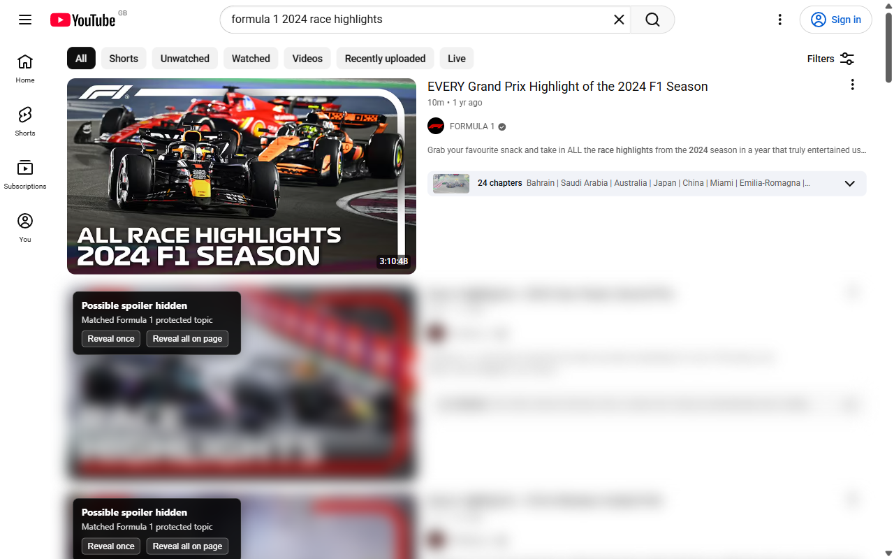
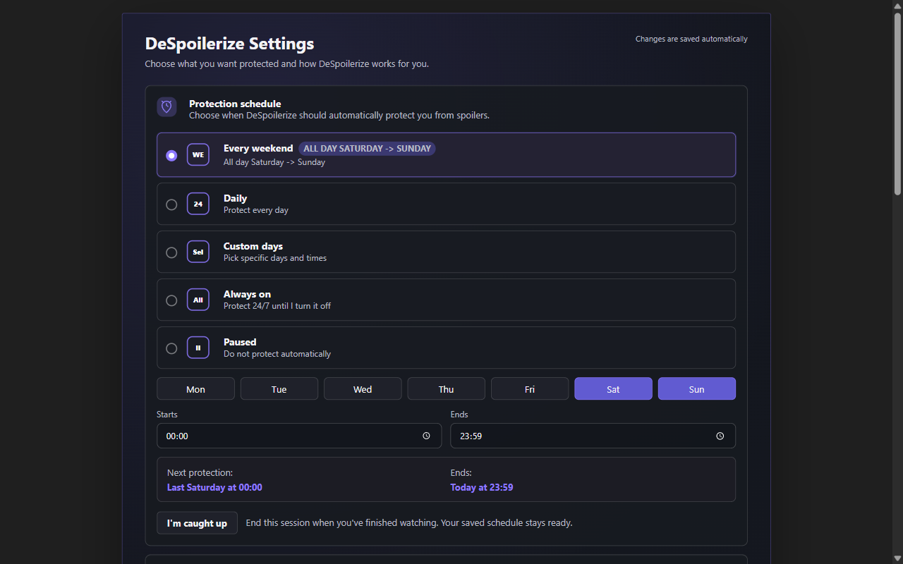
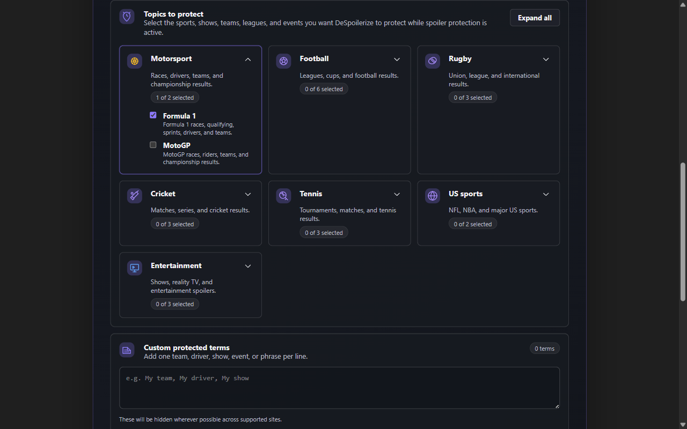
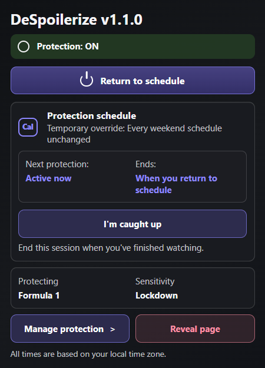
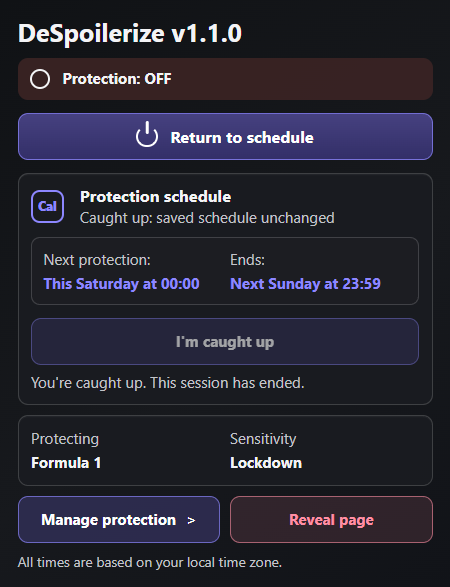
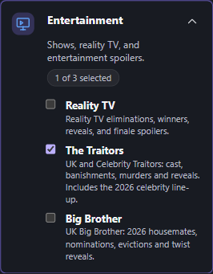
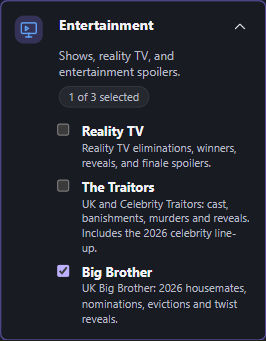
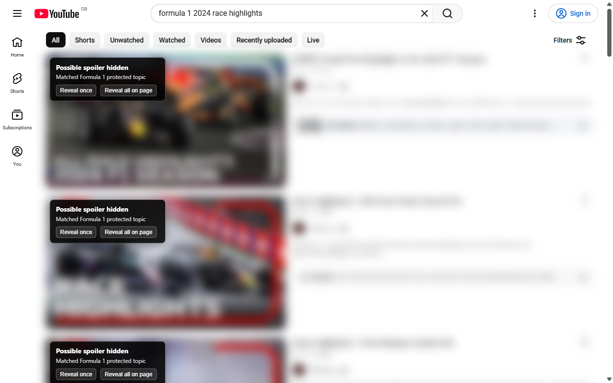
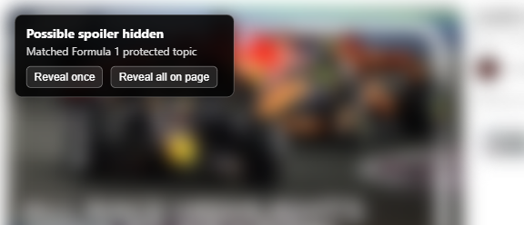
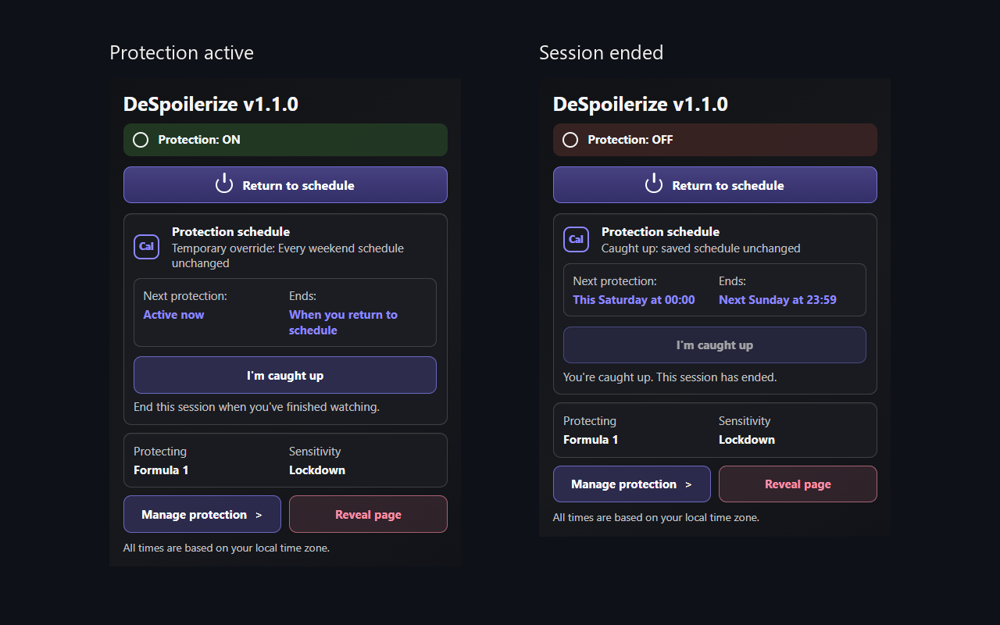

DeSpoilerize website refresh
Audit and asset handoff · 17 October 2026
The live Chrome Web Store shows v1.1.0, updated 28 September 2026. The website's popup image still shows v0.5.1.
Its current page lacks an install link, dedicated entertainment-pack details and the session-completion workflow.
Work raised
The existing website issue #20 already covers a regression case study. No duplicate was raised.
Files and provenance
Download the complete handoff ZIP ·
Image manifest and hashes · Suggested captions ·
Full issue specifications
11 PNGs and 31 WebP variants. Nine PNGs are unchanged genuine v1.1 captures from 27 September 2026.
The thumbnail is a documented crop; the popup comparison places two native screenshots side by side with labels.
No product UI was redrawn. Click each image to open its full-size PNG.
The sources are pinned to the audited remote commit in the manifest. Copy the required files into the website's
existing asset structure and update all consumers. The website checkout was left untouched.
These are retained September captures, not a new October live-site test. No installed-store upgrade or YouTube
behaviour was tested. No extension code changed, so extension build/tests were not rerun. All 42 images were
decoded, dimensions and SHA-256 hashes checked; originals were verified byte for byte.
Prepared images

despoilerize-f1-reveal.png · 1280 × 800
Formula 1 in Lockdown: one result deliberately revealed while others remain protected.
Byte-for-byte copy; no processing.
 despoilerize-big-brother-reveal.png · 1280 × 800
despoilerize-big-brother-reveal.png · 1280 × 800
Big Brother in Lockdown: episode 11 deliberately revealed; episode 12 stays protected. This is a viewer choice, not automatic episode tracking.
Byte-for-byte copy; no processing.

despoilerize-settings-schedule.png · 1280 × 800
The weekend schedule and I'm caught up in settings. Changes save automatically.
Byte-for-byte copy; no processing.

despoilerize-settings-topics.png · 1280 × 800
Grouped protection packs and custom terms. Entertainment is collapsed; dedicated choices appear in the detail captures.
Byte-for-byte copy; no processing.

despoilerize-popup-active.png · 450 × 625
Native popup: temporary protection active, saved weekend schedule unchanged, I'm caught up available.
Byte-for-byte copy; no processing.

despoilerize-popup-caught-up.png · 450 × 587
Native popup: session ended, protection off and next scheduled session shown. Relative dates belong to the September capture.
Byte-for-byte copy; no processing.

despoilerize-traitors-pack.png · 266 × 341
The Traitors selected independently in Entertainment settings.
Byte-for-byte copy; no processing.

despoilerize-big-brother-pack.png · 266 × 341
Big Brother selected independently in Entertainment settings.
Byte-for-byte copy; no processing.

despoilerize-protection-social.png · 1280 × 800
Formula 1 search results protected in Lockdown. Suggested 1280 by 800 social preview.
Byte-for-byte copy; no processing.

despoilerize-protection-preview.png · 576 × 248
Crop of the genuine warning and reveal controls over a protected Formula 1 thumbnail. Suggested homepage and directory preview.
Crop rectangle [88, 104, 664, 352], left/top inclusive, right/bottom exclusive. No resize or retouching.

despoilerize-popup-states.png · 1280 × 800
Side-by-side comparison of two real v1.1 popup captures: protection active, then session ended. This image is a labelled composition.
Labelled side-by-side comparison on a plain background. Both popup screenshots pasted at native size without retouching.